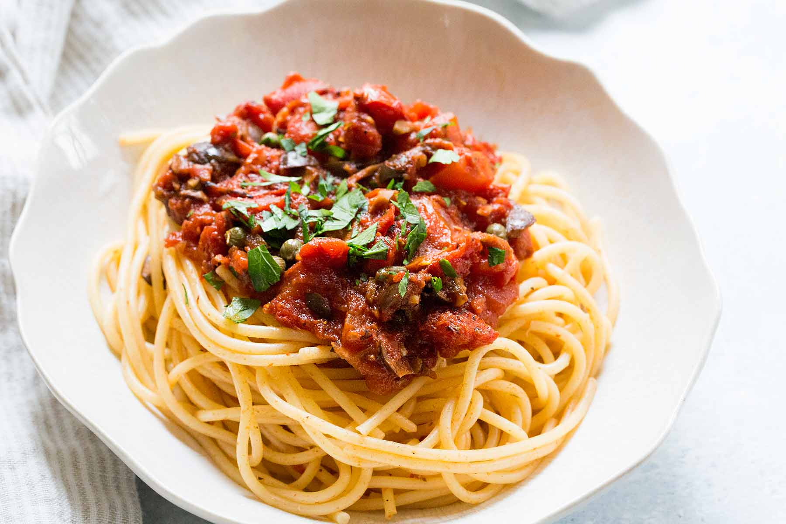

Ingredients per item:
- Olive Oil
- Ground beef
- Yellow Onions
- Garlic Cloves
- Tomato Paste
- Diced Tomatoes
- Water
- Dried Oreganos
- Grated Parmesan Cheese
- Fresh Basil
Steps To Make The Tacos
- Brown the Meat: heat half of the olive oil over medium-high heat in a large iron skillet. Break the meat apart as it brown and then use a slotted spoon to remove the meat and set aside on a plate.
- Sauté the Onions and Garlic: add the remaining olive oil and reduce the heat to medium. Sauté the onions until translucent and then add the garlic.
- Simmer the Sauce: stir in the crushed tomatoes, water, tomato paste, ground beef, oregano, and salt and pepper. Bring to a boil and reduce heat to a simmer for about 20 minutes until the sauce thickens.
- Stir in Cheese: add the grated cheese and any additional seasoning. Garnish with fresh basil.